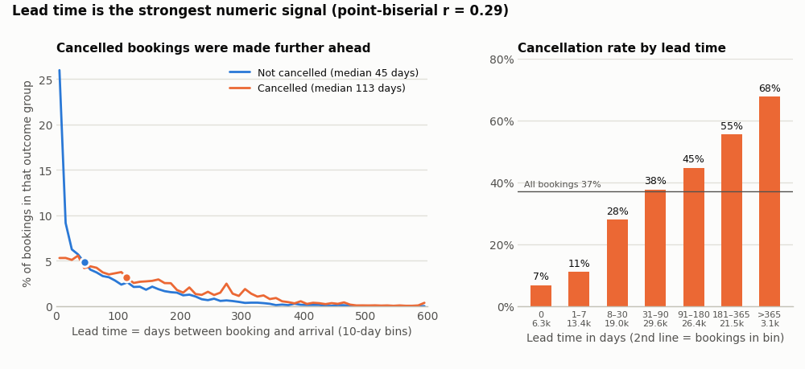
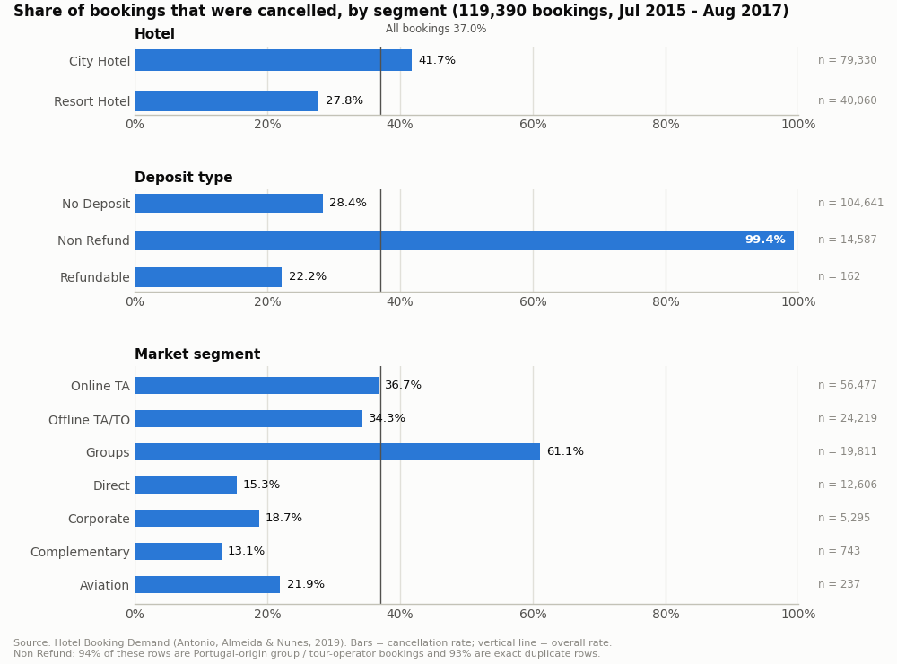
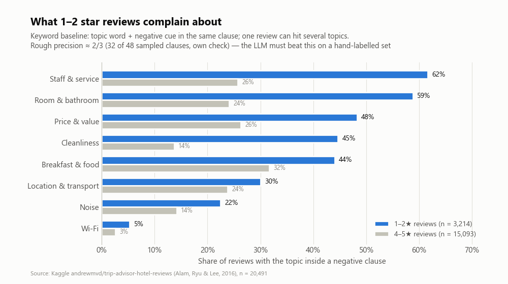
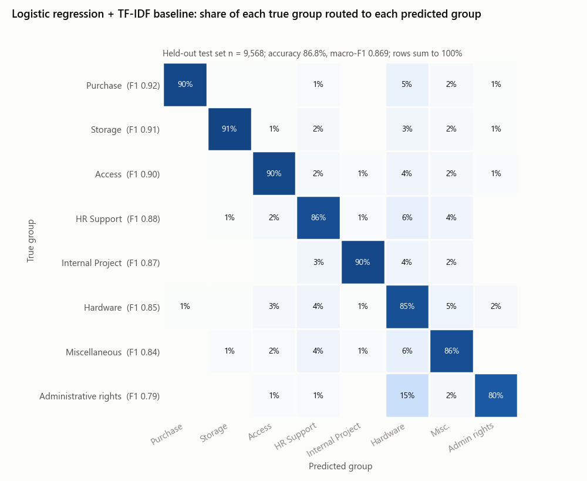
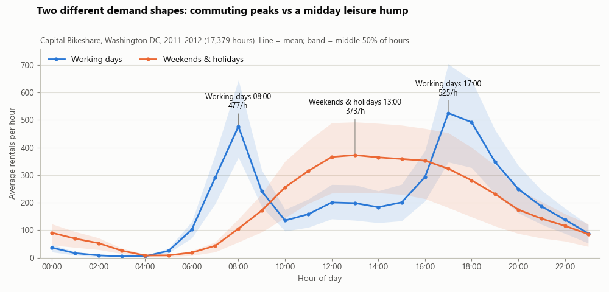
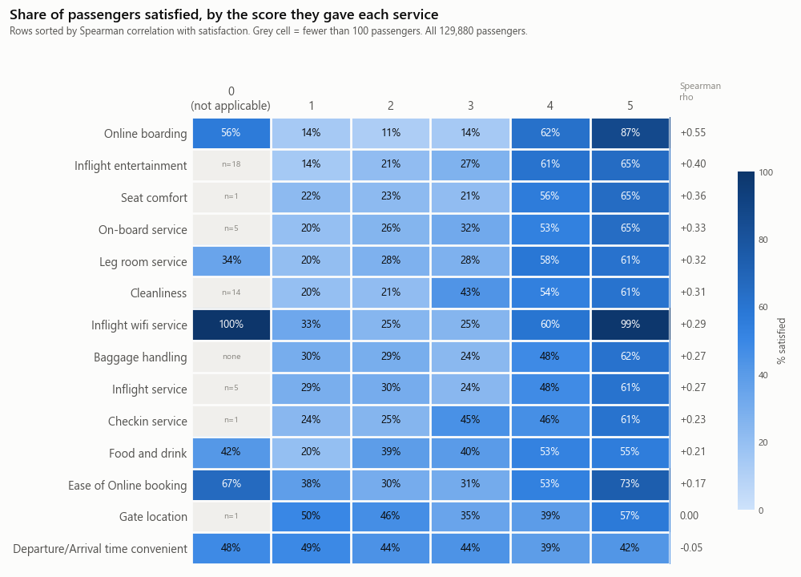

首选
公交服务可靠性预警(香港)
- 业务问题最具体:哪些线路、哪些时段容易出问题,能不能提前 15–30 分钟预警。
- 天生就是一个实时系统,最适合 AT3 的系统展示。
- 数据免费、不用申请,允许商业和非商业使用(注明来源)。
条件这周内(最晚 11/10)开始每分钟自动收集数据;先只做 5–10 条线路。
前 5 题都真的下载了数据、跑了基准模型。第 6 题“公交服务可靠性预警”是组里同学提的,实时接口和官方时刻表也都实际调用、下载核对过。每题最后附一份 1.12「项目目标 / 具体目标」草稿,可以直接复制。
其他 4 题也做得出来,但各有明显短板,见下表。这是建议,最后由组会决定。
| 题目 | 数据 | 实测基准 | AI 用在哪 | 最大风险 | 建议 |
|---|---|---|---|---|---|
| 公交可靠性预警 | 实时接口免费、不用密钥;没有历史数据,要自己每分钟抓 | 还没有 先收集 ≥ 4 周 |
把预警写成调度建议和乘客通知草稿 | 接口只有“预计”到站,没有“实际”到站,要自己推算发车间隔 | 首选 |
| 酒店订单取消 | 119,390 笔订单 × 32 个字段 | ROC-AUC 0.872 经验规则 0.748 |
为高风险订单写原因和挽留建议 | 26.8% 是重复行;“不退款”单 99.4% 取消 | 备案 |
| 酒店评论抱怨雷达 | 20,491 条评论 + 星级 | 抓差评 macro-F1 0.882 | 分主题、附原文依据、排出先改哪里 | 没有酒店名和日期;要人工标 300 条当考卷 | 可以 |
| IT 工单自动分派 | 47,837 张工单、8 个支持组 | macro-F1 0.869 有把握时自动分 75.6% |
处理没把握的工单、写第一封回复 | 文字被重度清理;8 个类别名称的来源不明 | 可以 |
| 共享单车需求预测 | 17,379 小时,很干净 | WAPE 19.4% 经验做法 25.5% |
把预测写成调度日报 | 只有全系统总量;和课程的出租车案例很像 | 可以,不突出 |
| 航空满意度 | 129,880 份问卷 | 准确率 96.4% 高得不正常 |
写服务改善建议 | 数据像规则生成,来源和授权查不到 | 不建议 |
怎么看分数:ROC-AUC 和 macro-F1 越接近 1 越好;WAPE 是误差占平均需求的比例,越低越好。“基准”是没调参的简单模型,也就是项目要超过的起点。
每题最后的 1.12 草稿:括号里的数字是目标值。想写得低调一点,可以先删掉括号,定稿时再补。
用香港巴士的实时到站数据,找出哪些线路、哪些时段最容易“等很久”或“串车”,提前 15–30 分钟提醒调度员加车,并用 AI 写好给乘客的通知。
已核对:交通署官方时刻表(GTFS,11/4 下载)的 frequencies.txt 里,九巴 578 条线路(按路线号算)有 396 条有按时段的规定发车间隔,例如 1A 线 7–20 分钟一班,选线路就从这 396 条里挑。这套算法和伦敦交通局考核高频公交(每小时 5 班以上)用的“额外等车时间”(Excess Wait Time,乘客平均比按时刻表应等的时间多等了多久)是同一个思路,报告里可以直接引用(TfL 说明页)。
| 香港(建议) | 新加坡 | |
|---|---|---|
| 密钥 | 不用,现在就能抓 | 要申请 AccountKey |
| 更新 | 约 1 分钟 | 20 秒 |
| 额外信息 | 官方规定发车间隔、天文台天气 | 车厢拥挤度、每月各站上下车人数、规定班次频率 |
| 条款 | 可以商用,注明来源 | 可以商用,醒目注明来源 |
新加坡的拥挤度和上下车人数很有价值,可以写成报告里的“延伸方向”。
项目目标(Project aim) 帮助香港巴士公司的调度中心提前发现可能出现的长时间等车或串车,让调度员能提前 15–30 分钟加派车辆或发布乘客通知,改善乘客的候车体验。 项目具体目标(Project objectives) 1. 从 11 月起,每分钟收集 5–10 条选定线路的实时到站数据,连同官方计划发车间隔(GTFS)和天气数据,建立至少 4 周的历史数据集。 2. 定义并计算服务可靠性指标(参考伦敦交通局的“额外等车时间”EWT、串车比例),找出最容易出问题的线路和时段。 3. 建立预测模型,提前 15–30 分钟预警长间隔或串车,并与“历史同时段平均”基准比较(初步目标:召回率 ≥ 70%、精确率 ≥ 60%,数据累积后再调整)。 4. 用大语言模型把预警写成给调度员的处理建议和给乘客的通知草稿,由人确认后才发出。 5. 2027 年 2 月前完成可实时运行的预警仪表板原型,并请队友扮演调度员做使用测试。
在客人下订时就算出“会不会取消”,把最可能取消、损失最大的订单排在前面让前台优先联系,并用 AI 写好原因和挽留建议。


项目目标(Project aim) 针对酒店打算在客人入住前主动联系、挽留订单的做法,提前找出取消风险高、损失大的订单,并用 AI 给出原因说明和建议动作,减少取消造成的空房收入损失。 项目具体目标(Project objectives) 1. 开发单笔订单的取消风险预测器,只用下单时就能知道的信息(在 2017 年保留测试数据上 AUC ≥ 0.88)。 2. 评估预测器在“人力只够联系 20% 订单”时是否好用,城市酒店和度假酒店分开评估(在可挽留的个人订单上,名单中真正会取消的比例 ≥ 70%)。 3. 做定量的成本效益分析:比较按模型、按简单规则、随机挑选三种联系名单能挽回多少收入,并做敏感度分析。 4. 用大语言模型为高风险订单生成简短的原因说明和建议动作,抽样检查不能出现事实错误。 5. 做一个可操作的原型界面,让非技术人员也能查看风险排名、原因和 AI 说明。
让 AI 读大量住客评论,找出差评最常抱怨、最影响评分的问题,附上原文依据,排出先改哪里。

项目目标(Project aim) 帮酒店管理者从大量住客评论中,快速找出差评最常抱怨、最影响评分的问题,并排出先改哪里,让有限的改善预算先花在最能减少差评的地方。 项目具体目标(Project objectives) 1. 做一个 AI 工具:读每条评论,标出它在抱怨什么(清洁、服务、房间、噪音、位置、餐饮、价格、Wi-Fi),并附上原文依据。 2. 检查 AI 准不准:用组员人工标注的 300 条评论来对,准确度要明显高于关键字方法(目标约八成);AI 判断的好坏也要和住客自己打的星级一致。 3. 排出改进的先后顺序:按“抱怨有多常见 × 跟低分关系多大”排出前 3 名,AI 写的每句建议都能对回原评论。 4. 做出能操作的网页原型,请不懂技术的同学试用,5 分钟内能说出最该先改的 3 件事;同时记录处理全部评论的时间和费用。 时间:12/11 前完成计划和基准测试;2/19 前完成原型和评估。
新工单进来时自动判断该交给哪个支持组;有把握才自动分,没把握的交给 AI 或人工,并草拟第一封回复。

项目目标(Project aim) 针对企业 IT 服务台每天收到的新工单,自动判断该交给哪个支持组,并草拟第一封回复,服务台人员只需确认或小改,从而减少人工分派的工作量和转错组的来回,让用户更快收到有用的回复。 项目具体目标(Project objectives) 1. 用公开的 IT 工单数据(约 4.8 万张、8 个支持组)完成数据理解,并请组里的运维同学抽查 200 张工单的分类是否合理(12/11 前写进项目计划)。 2. 开发工单分派模型,只在有把握时自动分派:自动分派的正确率 ≥ 95%,覆盖 ≥ 80% 的工单。 3. 比较大语言模型(零样本、少样本)和传统方法的效果、成本和速度,决定 AI 用在哪一步最合适。 4. 开发回复草稿功能,由运维同学盲评:≥ 70% 的草稿只需小改就能发出,且没有错误或危险的操作指示。 5. 做一个可操作的原型,估算每 1,000 张工单能省下多少人工分派和处理时间(2–5 在 2/19 前完成)。
预测隔天每个小时的用车量,AI 自动写调度日报,让运营团队提前把车和人手排到高峰时段。

项目目标(Project aim) 为共享单车运营团队预测次日每小时的用车需求,并由 AI 自动生成调度日报,帮助团队提前把车辆和人手安排到高峰时段,减少高峰时段的供需落差和临时调度。 项目具体目标(Project objectives) 1. 分析时段、工作日与节假日、季节和天气对用车量的影响,整理成运营团队看得懂的需求规律。 2. 开发次日每小时用车需求预测模型,在保留的测试数据上,误差比现有的经验做法低约两成。 3. 评估模型在高峰时段和特殊日子(节假日、恶劣天气)是否可靠,标出需要人工确认的情况。 4. 用大语言模型把预测结果写成调度日报,并请有运维经验的组员评估日报能否直接使用。 5. 估算使用预测和日报后,能减少多少调度误差和成本。
从满意度问卷找出对不同旅客群最能提升满意度的服务,AI 写成改善建议。

项目目标(Project aim) 针对航空公司服务改善预算的分配,从旅客满意度问卷中找出对不同旅客群体最能提升满意度的服务项目,并整理成管理层可以直接讨论的改善建议,让同样的预算换来更多满意的旅客。 项目具体目标(Project objectives) 1. 按舱位和出行目的把旅客分组,找出每组最影响满意度的几项服务。 2. 开发旅客满意度预测模型,并评估它的准确性。 3. 开发“如果某项服务评分提高”的模拟功能,估计满意比例的变化。 4. 用大语言模型根据分析结果撰写改善建议,并检查建议里的数字与分析结果一致。 5. 结合成本假设,比较各项改善的性价比,列出优先顺序。